Long-term environmental monitoring requires the ability to reconstruct and align 3D models across repeated site visits separated by months or years to enable the detection of structural change and the assessment of ecosystem health. However, existing Structure-from-Motion (SfM) pipelines are generally designed for imagery captured within a limited time window and consequently fail in long-term monitoring scenarios such as repeated coral reef surveys with substantial visual and structural change. In this paper, we show that the primary limitation of current approaches lies in their inability to maintain visual correspondences under substantial temporal appearance change. We address this limitation by enforcing cross-session correspondences within a joint SfM reconstruction. Our approach combines handcrafted and learned visual features to establish correspondences across large temporal gaps, enabling the reconstruction of a single coherent 3D model from imagery captured years apart, where standard SfM fails to connect sessions. To ensure scalability and further improve alignment robustness on large datasets, we restrict expensive learned feature matching to a small set of likely cross-session image pairs identified via visual place recognition, which reduces computational cost while improving the reliability of cross-session correspondence establishment. We evaluate our method on long-term underwater datasets exhibiting significant real-world change, and demonstrate consistent joint reconstruction across sessions in cases where existing methods fail to connect the sessions or align them only coarsely.
Coral reefs are among the most biodiverse and valuable marine ecosystems, but are increasingly threatened by climate change and other anthropogenic stressors. Monitoring these environments relies on capturing and aligning repeated visual surveys over months or years. Between visits, reefs can undergo substantial appearance and structural change due to corals growing or dying, bleaching, severe storms, human activity, and changing water conditions. Standard Structure-from-Motion (SfM) pipelines assume the images were captured close together in time under similar visual conditions. When run jointly on surveys captured years apart, they fail to connect the sessions. An alternative approach is to reconstruct sessions independently and then align the surveys post-hoc by their geometry. Natural scenes like reefs have few stable, distinctive geometric landmarks, so post-hoc alignment leaves the sessions only coarsely aligned.
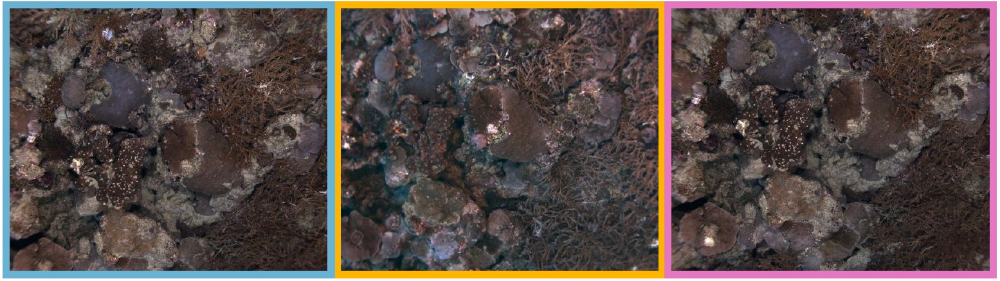
Sesoko Island, Okinawa: the same location in 2016, 2017 and 2018. The 2018 survey was recorded shortly after Typhoon Trami.
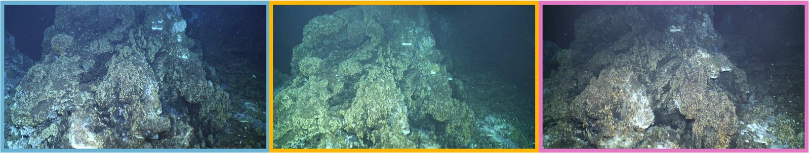
Eiffel Tower hydrothermal vent, Mid-Atlantic Ridge: repeated visits in 2016, 2018 and 2020 at ~1,700 m depth.
When appearance change is severe and stable geometric landmarks are sparse, aligning independently reconstructed sessions by their geometry alone is insufficient. We argue that failure to establish reliable cross-session correspondence is the key limitation in existing methods. Our hybrid feature-based SfM pipeline enforces cross-session correspondences within a single joint reconstruction by combining handcrafted and learned features. Learned matching is applied only to candidate pairs retrieved by visual place recognition (VPR).
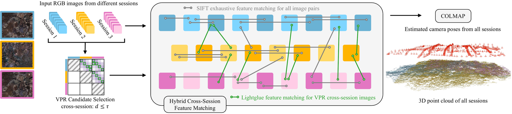
All correspondences, within and across visits, are provided simultaneously to a single SfM reconstruction. Camera poses and 3D structure are jointly estimated from this combined correspondence set in one coordinate frame.
Fast, exhaustive SIFT matching establishes reliable correspondences within each session. Learned SuperPoint + LightGlue matching robustly finds the cross-session correspondences that handcrafted features miss under large appearance change.
Visual place recognition (MegaLoc) selects candidate cross-session image pairs that are likely to observe the same place. Learned matching is applied only to these candidates, which keeps large datasets tractable.
Full multi-session reconstructions of both datasets. Points are coloured by the survey that observes them, showing that observations acquired at different times are jointly reconstructed into a single coherent 3D model despite substantial temporal appearance and structural changes.
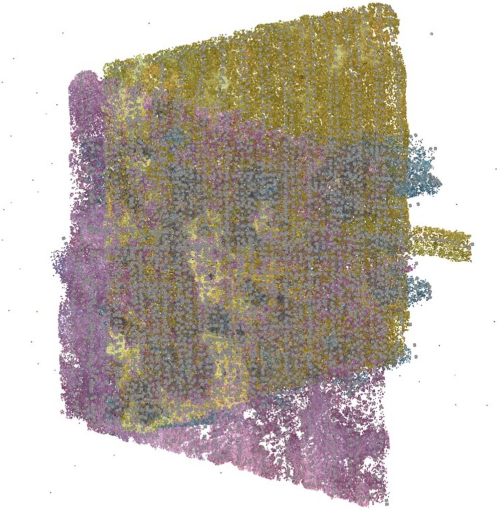
Sesoko: 2016 / 2017 / 2018
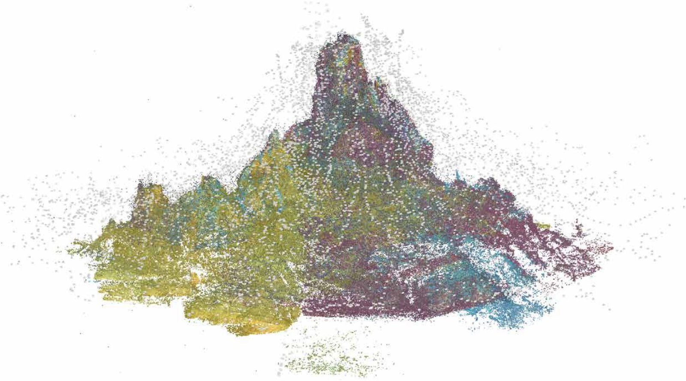
Eiffel Tower: 2016 / 2018 / 2020
We compare against joint reconstruction (COLMAP, MapAnything) and against post-hoc point cloud registration of independently reconstructed sessions (ICP, BUFFER-X). Accuracy is measured as the reprojection error of manually annotated correspondences between images from different years alongside the number of annotated points successfully reconstructed and projected by the method. Select a method to see its reconstruction of one Sesoko subset (ssk-s01), and its pixel-level alignment of a 2016–2017 image pair of the same place.
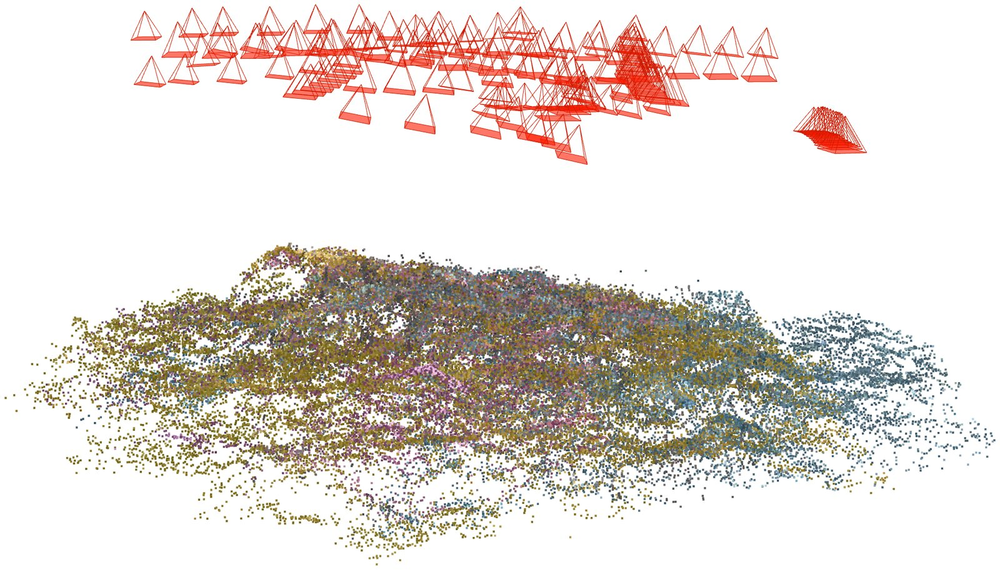
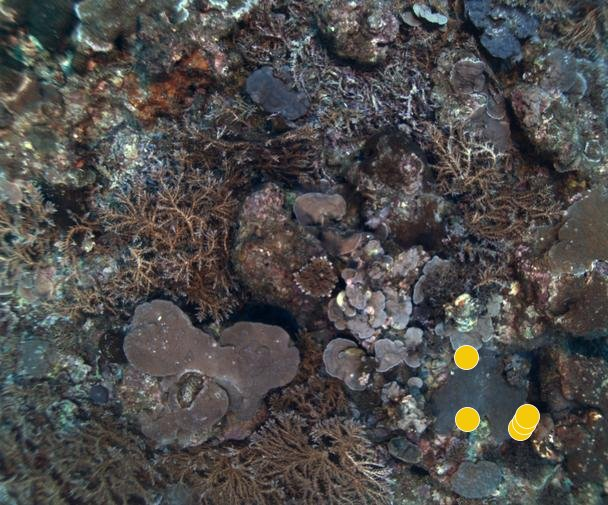
2016 query, with annotated points
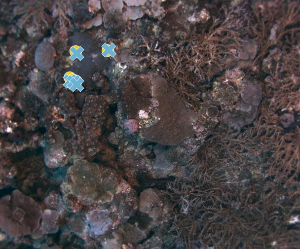
2017 database image: annotations vs. Ours projections
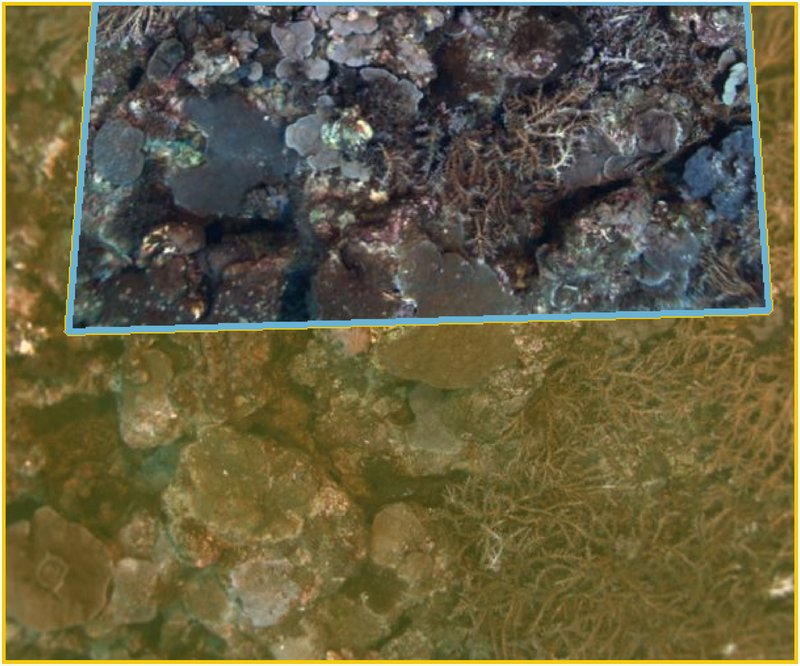
Expected overlap (2016 query warped onto 2017 database image)
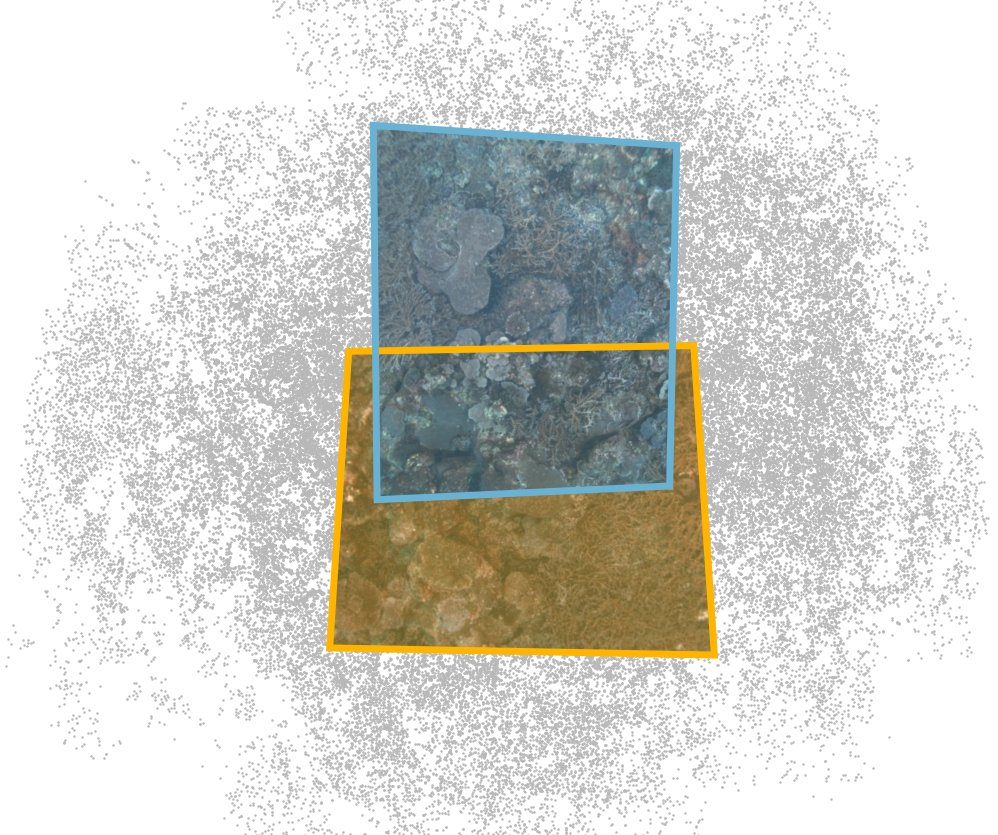
Ours: image footprints from above
Yellow circles: annotated correspondences. Blue crosses: points projected by the reconstruction. Red lines: reprojection error. Hollow circles: the query image was not registered.
| Method | ssk-s01 | ssk-s02 | ssk-s03 | ssk-s04 | ssk-s05 | ssk-full | eff-full |
|---|---|---|---|---|---|---|---|
| COLMAP | ✗0/59 | 2.3437/85 | 2.3651/103 | 3.9512/35 | 5.09128/145 | 8.1059/98 | 14.8253/57 |
| MapAnything | 334.9256/59 | 448.4785/85 | 415.15100/103 | 76.9835/35 | 603.32143/145 | ✗0/98 | ✗0/57 |
| COLMAP + ICP | 371.1956/59 | 56.5979/85 | 40.1599/103 | 404.8634/35 | 366.09128/145 | 584.8359/98 | 108.7252/57 |
| COLMAP + BUFFER-X | 54.4056/59 | 36.0379/85 | 32.7999/103 | 68.3134/35 | 27.52128/145 | 86.7559/98 | 354.3152/57 |
| Same cross-session correspondences as ours, applied after independent reconstruction | |||||||
| Post-hoc Sim(3) | 2.4056/59 | 3.8979/85 | 2.6199/103 | 6.6034/35 | 4.12128/145 | 20.9659/98 | 33.6952/57 |
| Post-hoc Sim(3) + BA | 1.7059/59 | 2.9385/85 | 2.31103/103 | 5.7935/35 | 3.31144/145 | 15.0089/98 | 28.7155/57 |
| Ours (joint) | 1.3659/59 | 2.2885/85 | 2.15103/103 | 3.9435/35 | 2.00145/145 | 2.4292/98 | 7.2957/57 |
Lower is better. Small numbers: annotated points evaluated by the method. ✗: the method failed to produce a complete point cloud, or no annotated points could be evaluated. The post-hoc variants are discussed below.
Exhaustive learned matching grows rapidly with the number of images. Restricting it to cross-session pairs, and then to VPR candidates, reduces total runtime on 740 images from 277 to 50 minutes (−82%) without reducing accuracy (2.00 px with VPR-guided matching vs. 2.14 px with exhaustive matching).
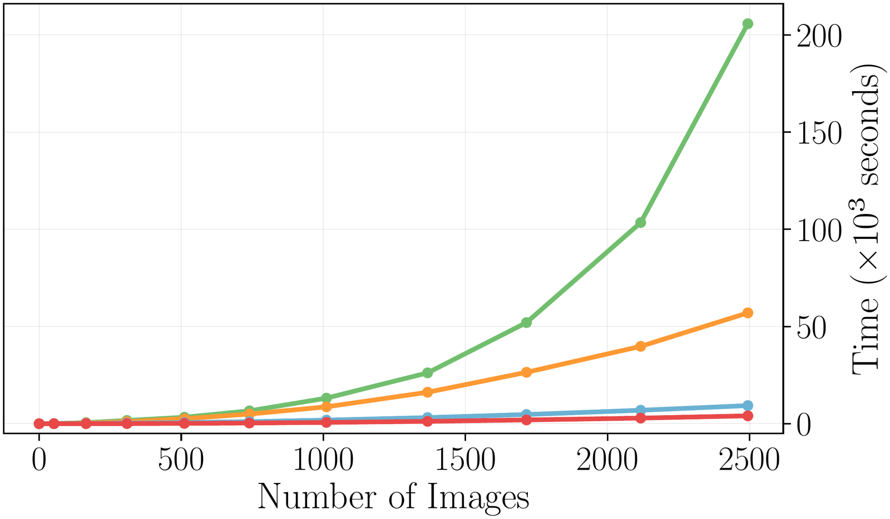
To separate the contribution of the cross-session correspondences from that of integrating them jointly, we take exactly our VPR-selected pairs and verified cross-session correspondences and apply them only after each session has been reconstructed independently.
With our correspondences, a single similarity transform already reaches 2.40–6.60 px on the Sesoko subsets. Registering the same reconstructions by geometry alone gives 28–405 px (ICP, BUFFER-X).
Our joint reconstruction is the most accurate on every dataset. The gap is small on the subsets but grows on the full datasets, where the post-hoc errors are roughly 4–9× higher.
| Median RPE (px) | Sesoko subsets | ssk-full | eff-full |
|---|---|---|---|
| Post-hoc Sim(3) | 2.40–6.60 | 20.96 | 33.69 |
| Post-hoc Sim(3) + BA | 1.70–5.79 | 15.00 | 28.71 |
| Ours (joint) | 1.36–3.94 | 2.42 | 7.29 |
Subpixel-accurate ground truth is unavailable for long-term multi-session reconstructions, so every method is scored against a fixed set of manually annotated cross-session correspondences. Annotators select only distinctive points on structure that is identifiable in both sessions, ensuring the evaluation is restricted to regions that remain stable between visits.
To verify the consistency of the annotations, a second annotator (not an author) independently re-annotated all 145 query points of ssk-s05 following the same protocol. The two annotators' clicks of the same point differ by a median of 2.91 px, which indicates the precision of the manual annotation. Scoring every method on each annotator's points gives the same ranking of methods for both annotators.
| Annotator | Ours | Post-hoc Sim(3) | COLMAP |
|---|---|---|---|
| A (original) | 2.00145/145 | 4.12128/145 | 5.09128/145 |
| B | 2.71145/145 | 4.20128/145 | 5.03128/145 |
Median reprojection error (px) on ssk-s05 with each annotator's points. Small numbers: annotated points evaluated by the method.
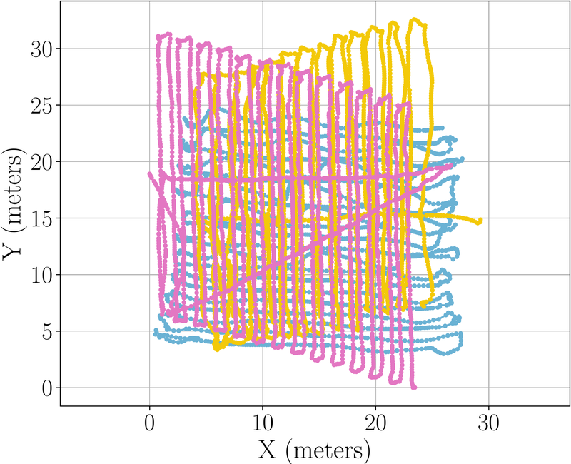
Sesoko Island, Okinawa: mesophotic coral reef (~37 m), AUV lawnmower surveys in 2016, 2017 and 2018.
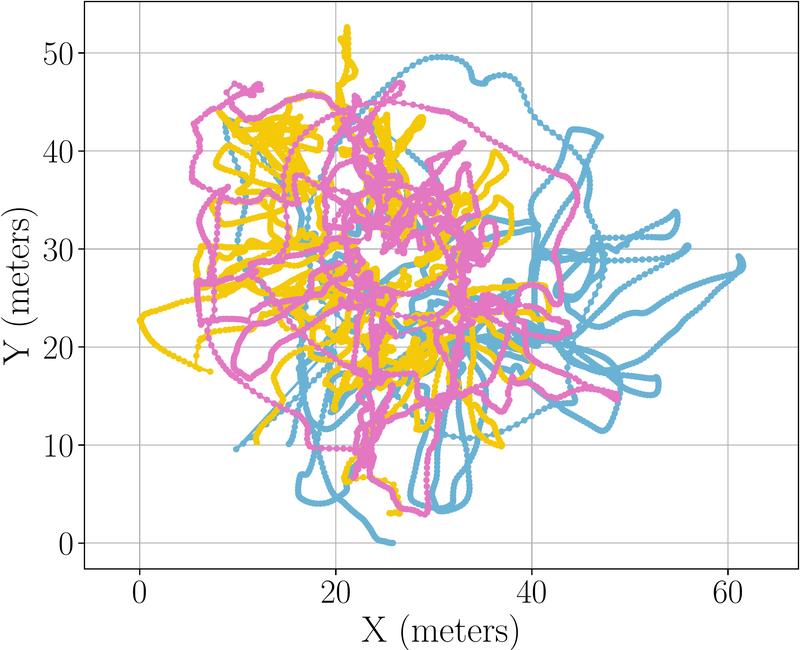
Eiffel Tower, Mid-Atlantic Ridge: deep-sea hydrothermal vent edifice (~1,700 m), ROV surveys in 2016, 2018 and 2020 (Boittiaux et al., 2023).
@article{gorry2026longterm,
title={Long-Term Multi-Session 3D Reconstruction Under Substantial Appearance Change},
author={Beverley Gorry and Tobias Fischer and Michael Milford and Alejandro Fontan},
journal={arXiv preprint arXiv:2602.20584},
year={2026},
}
This research was partially supported by funding from ARC Laureate Fellowship FL210100156 to Professor Michael Milford and ARC DECRA Fellowship DE240100149 to Associate Professor Tobias Fischer. The authors acknowledge continued support from the Queensland University of Technology (QUT) through the Centre for Robotics.
We build on COLMAP, LightGlue, MegaLoc and VSLAM-LAB, and compare against MapAnything and BUFFER-X. We thank the providers of the Sesoko and Eiffel Tower datasets.